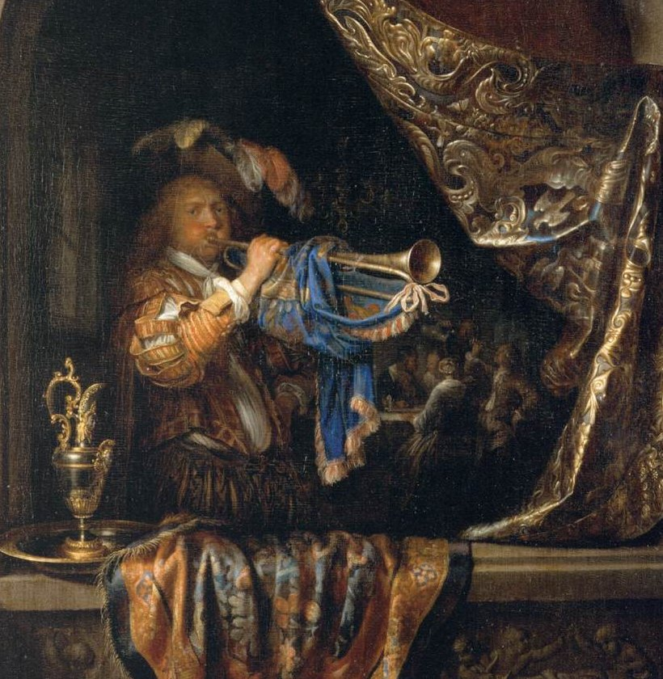

For the B♭ trumpet
No songs match that search.
On GitHub, choose Valve-Finder under Repository access, then Generate.
Scan with your phone's camera. Whoever scans it can change your songs, so only show it to your own phone.
Large: trumpet note · small: concert pitch
D.S., D.C. and coda jumps aren't written out.